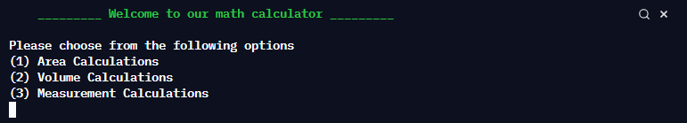

Your task will be to create a calculator that can be used to help with measurments.
You will choose at least 6 categories that your calculator will help the user solve. These could include:
-Area of shapes (pentagons, various triangles, etc.)
-Volumes of objects (Cylinders, pyramids, etc.)
-Conversion of units (inches to cm, miles to Km, etc.)
-Your program will need an attractive menu where the user can select the option they want to access
-Tell the user the formula being used and ask for inputs
- Computes the correct answer and provides it back to the user
